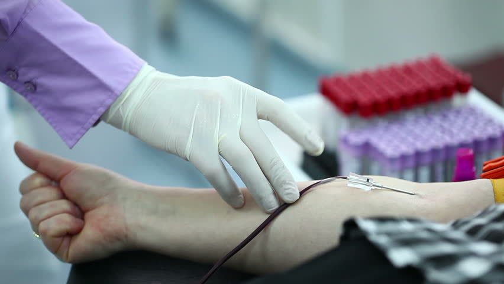

I give blood?

Sometimes it is not possible for you to give blood, or we may have to ask you to wait for a period of time before donating again. To save donors from wasted time and wasted journeys, this page addresses some of the most common questions about eligibility.
If you have an existing medical condition, or have a question about your eligibility to give blood, you should check the health & eligibility and travel section before you book an appointment. Remember, if you ever need to cancel a donation appointment we ask that you give us 3 days' notice so that we can offer your appointment to another donor. You can easily cancel or reschedule your existing appointments by signing in to your online account or using the NHSGiveBlood app.
Can I donate if I feel ill, have a chesty cough, a cold sore or am coming down with a cold?
If you are feeling under the weather with any of these things it’s best that you wait until you feel better before you give blood. Use our health & eligibility section to find out more.
Can I donate blood if I am taking antibiotics or have an infection?
You must be completely healed or recovered from any infection for at least 14 days before you give blood. If you are taking antibiotics you may need to wait a period of time after your last tablet. Please follow our advice about donating after an infection. Please also see our advice about donating after antibiotics.
Can I donate if I am pregnant, or have recently been pregnant?
During your pregnancy, you are not able to give blood. If you had a blood transfusion during your pregnancy or at delivery then you will not be able to become a blood donor. Please follow our advice about giving blood during and after pregnancy.
Can I give blood if I am receiving medical treatment or taking medication?
We’ll need to check that you can donate. Whether or not you can donate will depend on the medication you are receiving as well as the condition for which you are being treated. Please search for your condition or medication in our health & eligibility section.
Can I give blood if I have been to the dentist or received dental treatment?
We will need to have more information to know if you can give blood. It will depend on your specific heart condition. Please see our advice for giving blood with a heart condition.
Can I donate if I have got a tattoo or a body piercing?
If you had this done recently you may have to wait before you can donate again. Please follow our advice about giving blood after a tattoo or getting your body pierced.
We do not prevent people from becoming blood donors based on their sexuality. There are some restrictions for blood donors who take part in activities deemed risk behaviours by the Advisory Committee on the Safety of Blood, Tissues and Organs who advise UK ministers and health departments.
In November 2017 there were changes to the blood donor selection criteria for men who have sex with men. You can read our news statement about the blood donor selection changes.
Appointment availability
Don’t worry if you can’t find an appointment straight away – we build stock by prioritising the most in demand blood types so we can make up any shortfall. It may be that an appointment date, time and location that suits you isn’t immediately available.
Register now and book an appointment to give blood in the months ahead or if you want to donate sooner, then donate at one of our 23 permanent donor centres.

© blood donation.com
for more information
CONTACT US - +91 7981790871